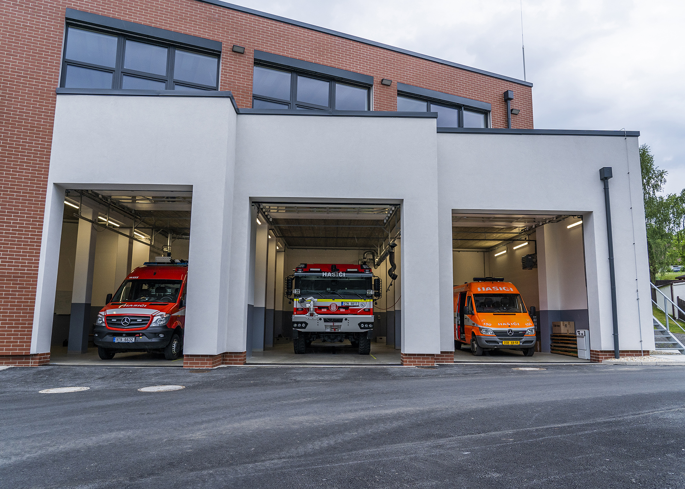
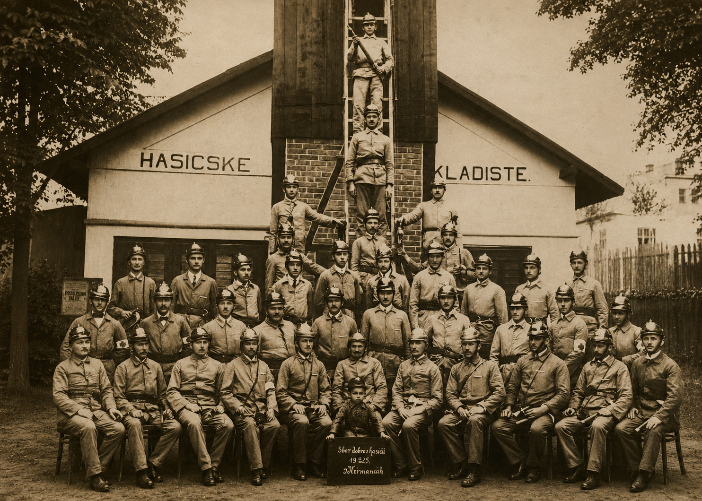

Naše jednotka je zařazena do kategorie JPO III, v současnosti ji tvoří 25 členů. Naším zřizovatelem je městský obvod Slezská Ostrava jako součást statutárního města Ostravy. Stanovený výjezdový čas jednotky je do 10 minut od vyhlášení poplachu.
Členové se na hasičské zbrojnici schází každý čtvrtek v odpoledních hodinách a provádějí školení a výcviky na různé typy zásahů, s nimiž se můžeme v reálné situaci setkat. Provádíme také údržbu naší techniky a staráme se o chod hasičské zbrojnice.
V současnosti disponujeme čtyřmi požárními automobily; cisternovou automobilovou stříkačkou na podvozku Tatra Force 3. generace, dopravním automobilem na podvozku Mercedes-Benz Sprinter, nákladním automobilem na podvozku Mercedes-Benz Sprinter a osobním automobilem Škoda Roomster.
Naše jednotka je zařazena do požárního poplachového plánu kraje, v 1. stupni požárního poplachu vyjíždíme zejména k událostem na území Heřmanic a Slezské Ostravy. Převážnou část našich zásahů tvoří požáry, odstraňování stromů, čerpání vody a odstraňování nebezpečných stavů. V minulosti jsme zasahovali např. u rozsáhlých lesních požárů v Mikolajicích a Starých Hamrech, požáru autovrakoviště v Ostravě - Vítkovicích, při povodních na území města Ostravy, odklízeli jsme následky tornáda na jižní Moravě a také jsme poskytovali humanitární pomoc při epidemii Covid-19 a při uprchlické krizi.


Dne 5. května 1893 vypukl ve stodole rolníka Františka Vlčka požár, jehož přesná příčina nebyla nikdy objasněna. Díky silnému větru se oheň velmi rychle šířil a způsobil zkázu osmi obytných budov z celkových třinácti objektů. Situace by byla ještě mnohem horší, kdyby nezasáhly hasičské sbory z okolních obcí.
Právě tato tragédie podnítila v Heřmanicích snahu začít řešit otázku požární ochrany. Karel Žebrák následně vypracoval stanovy nově vznikajícího hasičského spolku, které byly schváleny c. k. Zemskou vládou v Opavě.
Dne 1. října 1893 se v hostinci Jana Žebráka v Heřmanicích uskutečnila volba prvního výboru hasičského sboru, jehož vedením byl pověřen starosta František Žebrák. Tímto okamžikem se začala psát historie místního hasičského sboru.